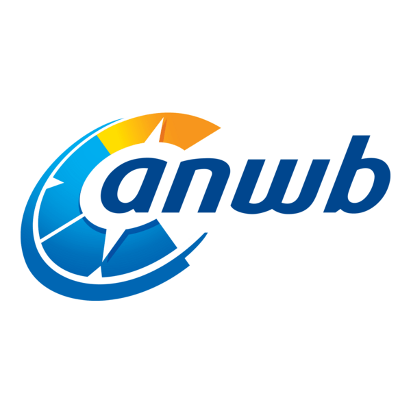
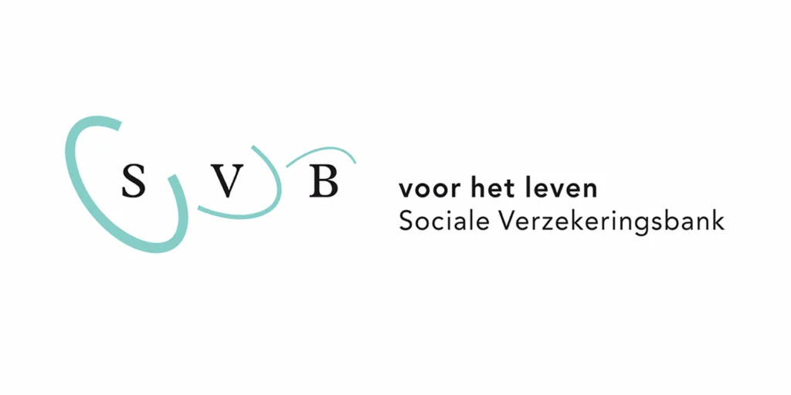
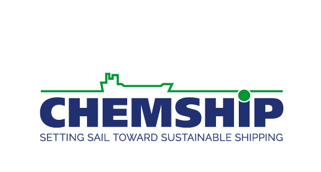

Ik werk sinds 2018 in de IT/data. Voor mijn werk als data engineer heb ik ruim 10 jaar in de Radio- en TV-journalistiek gewerkt. In 2018 heb ik de switch gemaakt naar IT.
Na een kleine 3 jaar als data engineer bij de Evangelische Omroep (EO) heb ik de overstap gemaakt naar consultancy bij ilionx. In 2025 ben ik begonnen bij de Nederlandse Spoorwegen (NS), waar ik bij team Anchova binnen de afdeling Data, Insights & Analytics (DIA) zorg voor financiële stuurinformatie met Snowflake en Azure Data Factory. Deze stap paste goed bij mijn interesse in duurzaamheid en de publieke taak die de NS vervult.
Mijn Ervaring
NS (Nederlandse Spoorwegen)
2025 - Heden
Als Data Engineer bij team Anchova binnen de afdeling Data, Insights & Analytics (DIA) van NS zorg ik voor financiële stuurinformatie. Met Snowflake en Azure Data Factory lever ik de data die NS nodig heeft voor financiële besluitvorming.

ANWB Retail
2025 (opdracht ilionx)
Ontsluiten van nieuwe bronnen in het data-platform van ANWB Retail. Hierdoor krijgt de ANWB o.a. meer inzicht in de duurzaamheid van producten en de impact op het milieu.

Sociale Verzekeringsbank (SVB)
2023-2025 (opdracht ilionx)
Bouwen van een Azure dataplatform op basis van de lakehouse architectuur van Microsoft in Synapse. Doel is de SVB sneller en beter te laten rapporteren over o.a. HR/IT Service Management / Klantenservice.

Chemship
2023 (opdracht ilionx)
Samen met een ilionx-collega heb ik voor rederij Chemship een Azure dataplatform gebouwd op basis van hun bestaande bronnen. Met dit platform als basis hebben we hen o.a. geholpen met het inzichtelijk maken van emissies en het vaststellen van energielabels voor hun tankers.
Data Engineer met een unieke achtergrond in journalistiek. Sterk in het verbinden van techniek en business. Ik houd van werken in multidisciplinaire teams, veel contact met stakeholders, en het vertalen van functionele vragen naar technische en procesmatige oplossingen. Woonachtig in Utrecht.
Werkervaring
Data Engineer
2025 - Heden
NS (Nederlandse Spoorwegen)
Team Anchova binnen afdeling Data, Insights & Analytics (DIA)
Zorgen voor financiële stuurinformatie met Snowflake en Azure Data Factory
Ondersteuning van financiële besluitvorming binnen NS
Senior Data Engineer
2022 - 2025
ilionx
Ontwerpen en bouwen van ETL-processen in de Azure-cloud met Data Factory en Synapse
Ontwikkeling in PySpark Notebooks en SQL scripts
Implementatie van medaillon architectuur voor diverse klanten
Samenwerking met multidisciplinaire teams en verschillende leveranciers
Data Engineer
2020 - 2022
Evangelische Omroep
Automatisering van rapportages over kijkcijfers en websitebezoek
Ontwikkeling van data pipelines voor media analytics
Optimalisatie van reporting processen
Data Analist
2019 - 2020
DICTU (Dienst ICT Uitvoering)
Data analyse voor overheidsorganisaties
Ontwikkeling van analytische dashboards
Ondersteuning bij data-gedreven besluitvorming
Redacteur
2012 - 2022
RTL Nederland
Journalistieke werkzaamheden voor Editie NL en RTL Sportupdate
Online artikelen schrijven
Redacteur
2009 - 2012
NCRV Radio
Radiojournalistiek en nieuwsproductie
Redactie en regie
Verslaggeving en interviews
Opleiding
Bachelor Business IT & Management
2018 - 2020
Hogeschool van Amsterdam
Specialisatie: Business & Data Analytics
MA Journalistiek
2007 - 2009
Rijksuniversiteit Groningen
Afstudeerscriptie: "Camjo in de Regio: Een etnografische studie naar mediaconvergentie bij RTV Utrecht en Omroep Flevoland"
Verenigingen: ASV Dizkartes, The Knickerbockers, GCHC, Veracket, TJAS
BA American Studies
2003 - 2007
Rijksuniversiteit Groningen
Specialisatie: Amerikaanse cultuur, geschiedenis en literatuur
Exchange Program - Geschiedenis & Literatuur
2005
Ball State University, Muncie, Indiana (USA)
Uitwisselingsprogramma - Amerikaanse geschiedenis en literatuur
Een verzameling interessante podcasts over technologie, geschiedenis en meer.
🎙️ Podcast
How Quickly Will A.I. Agents Rip Through the Economy?
The Ezra Klein Show over de transitie van chatbots naar autonome A.I.-agents die zelfstandig taken kunnen uitvoeren en samenwerken met andere A.I. Wat betekent dit nieuwe tijdperk voor de economie en productiviteit?
The Rest Is History met Stephen Fry over zijn blijvende fascinatie met Griekse mythologie. Een boeiend gesprek over de oude verhalen en hun relevantie vandaag.